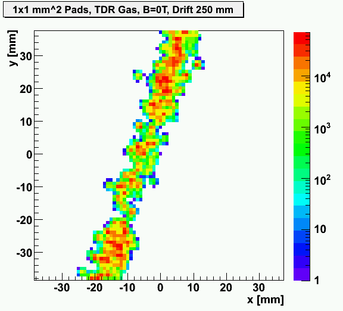
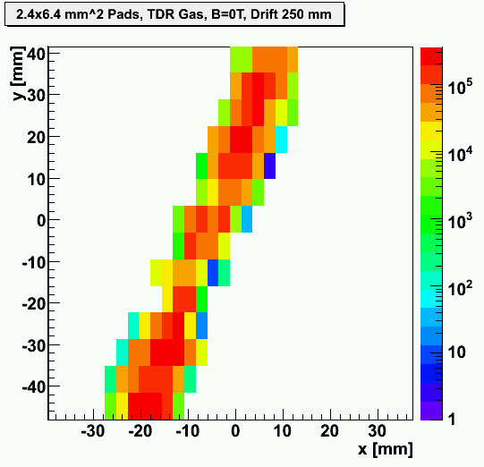
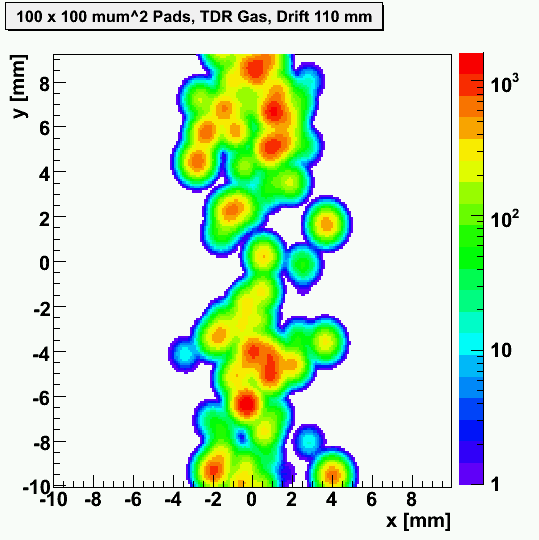
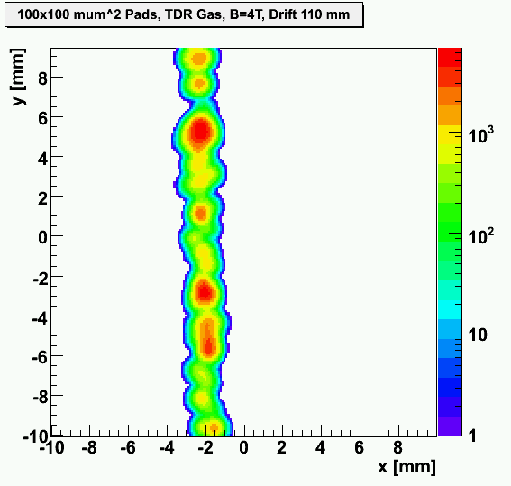
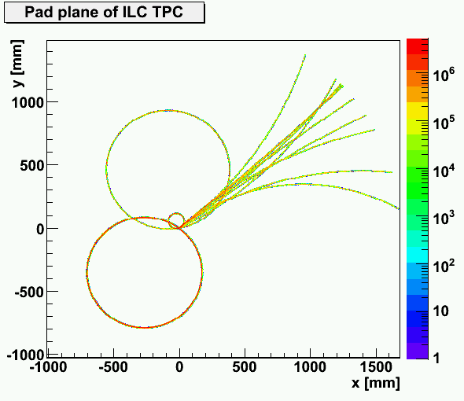
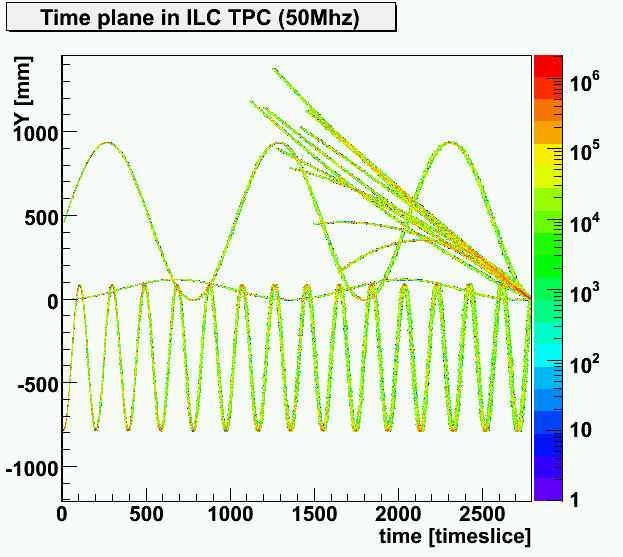

Notice: The output of the program goes to the path it was called from. The output file is a ROOT Tree.
CreateMuonDataFile 100 130 260 inputs/muonenergy.dat
This will produce a file called MuonEvents_N100_R130_L260.root.
Now you can either use the GUI to set the parameters for the different modules or issue the following commands:
TPCIonisation MuonEvents_N100_R130_L260.root 260 130 0 0 inputs/eproclusterInt.dat --full_curler
This will produce the file TPCIonisation_B0.0_R130_L260.root containing the primary electrons.
To drift these type
TPCDrift TPCIonisation_B0.0_R130_L260.root TDR 240
which writes the drifted electrons to TPCDrift_B0.0_R130_L260_E240_TDR.root.
Now you have to choose a lot more input parameters.
Typing TPCPads gives a usage instruction.
So for example you can simulate 448 channels of 2.0 times 6.0 mm2 pads:
TPCPads TPCDrift_B0.0_R130_L260_E240_TDR.root 2 6 448 32 0 0 320 2500 320 2500 320 5000 inputs/TDR-0T-final-new.par.nocomments 1
This produces the file TPCPads_B0.0_R130_L260_E240_TDR_px2.0_py6.0.root.
You can now vary for example the pad size into 1.0 times 1.0 mm2 pads:
TPCPads TPCDrift_B0.0_R130_L260_E240_TDR.root 1 1 448 32 0 0 320 2500 320 2500 320 5000 inputs/TDR-0T-final-new.par.nocomments 1
Depending on where you issue these commands you might need to adjust the path for the input files.
To apply a shaping use TPCElectronics TPCPads_B0.0_R130_L260_E240_TDR_px2.0_py6.0.root 12.5 120 8 33500 5 3 3
To show a simple example of visualizing the pad plane with ROOT there is a ROOT macro PadPlaneRoot.C.
To use it start ROOT. You have to load the shared libraries of the root objects contained in the file, for example:
gSystem->Load("libTPCSimChannel.so")
gSystem->Load("libGeometryInfo.so")
gSystem->Load("libRunParameterInfo.so")
gSystem->Load("libElectronicsInfo.so")
Then open the file with the information about the collected charge on the pads, for example:
TFile f("TPCPads_B0.0_R130_L260_E240_TDR_px2.0_py6.0.root")
To execute the macro type:
.x PadPlaneRoot.C
The script will draw the pad plane for one event.
You can change the script to plot a different event, or plot the x-time-projection.
The first analysis step would be to reconstruct pulses from the charge deposits in each time slice.
The following plots show the pad plane for one cosmic track for different pad sizes.
| 2 pads"> | 2 pads"> |
| 2 pads"> | 2 pads at 4T"> |
Or use the PadPlaneRoot.C macro to draw the pad or time plane. Change the event number from 13 to 0 ( 0 because events before 4 were empty and are not written to file in the last step; empty events are stored in the primary ionisation file for trigger purposes) and choose either to draw the histogram hist or histrt:
|  |  |